Lee - Machine Learning
The notes are taken following Hung-yi Lee‘s machine learning theoretical course with the main contents in Chinese. The lectures are underlined as “The Best Machine Learning Material In Chinese Language”. The table below shows the contents I followed and the tasks could be directly jumped into by clicking the hyperlink.
| INDEX | CONTENT |
|---|---|
| Hung-yi Lee’s 2017 Lecture | |
| TASK01 | P1 Intro to Machine Learning P2 Why should we learn ML? |
| TASK02 | P3 Regression P4 Regression (demo) |
| TASK03 | P5 Where are the errors from? P6 Gradient Descent P7 Gradient Descent - AOE P8 Gradient Descent - Minecraft |
| TASK04 | P13 Deep Learning P14 Backpropagation |
| Hung-yi Lee’s 2021 Lecture | |
| TASK05 | P5 Local minima vs Saddle point P6 Batch vs Momentum P7 Learning Rate P8 Optimization by loss function P9 Batch Normalization |
| TASK06 | P10 Convolutional Neural Network (CNN) |
- - - - - - - - - - - - - - - T A S K 0 1 - - - - - - - - - - - - - - -
[ B A C K ]

P1 机器学习介绍
by Hung-yi Lee - Machine Learning 2017 - P1 机器学习介绍

Supervised Learning
1. Regression （回归）
- The output of the target function f is ‘scalar’.
- 讨论自变量x和因变量y的线性关系，构建方程，推论和预测y
- example:
| Input | Output |
|---|---|
| Historical PM2.5 → | Predicted PM2.5 |
2. Classification
- Binary Classification 二元分法: YES/NO
Multi-class Classification 多元分法: ex: 新闻分类
Model (Function)
- Linear model
- Non-linear model
- Deep learning
example:
- IMAGE RECOGNITION (Hierarchy structure)
- Playing GO: n*n 的选择题
- SVM, decision tree, KNN
- Deep learning
Training data:
- Input/output: Pair of target function
- Function: Output = label (往往需要大量labeled data)
3. Structured Learning
- Beyond Classification
机器要输出的是复杂的物件
- Ex:
Speech Recognition
Machine Translation
人脸识别
Additional scenario
是否有其他无需大量labeled data的学习？YES：↓
| n. | scenario | 特点 |
|---|---|---|
| a. | Semi-supervised Learning： | 可以利用学习中有些未被label的dataset |
| b. | Transfer Learning： | 无相干的dataset，如：训练猫狗识别的照片，给了其他如大象、动漫等图片 |
| c. | Unsupervised Learning | |
| d. | Reinforcement Learning： | 因为没有办法data做supervised learning，如果能做supervised learning就不会做reinforcement learning |
区别：
| Supervised | vs | Reinforcement |
|---|---|---|
| Learn from teacher | ←→ | Learn from critics |
Alpha GO is supervised + reinforcement learning (机器跟机器下棋，自己跟自己下棋)
P2 为什么要学习机器学习
by Hung-yi Lee - Machine Learning 2017 - P2 为什么要学习机器学习
AI训练师指导AI，类比Pokemon的训练师（？？？）
- - - - - - - - - - - - - - - T A S K 0 2 - - - - - - - - - - - - - - -
[ B A C K ]

P3 Regression 回归
by Hung-yi Lee - Machine Learning 2017 - P3 Regression
Q：Regression 可以做什么？
A：可以是：预测股票、自动驾驶、推荐等 → f(x) = y (= PREDICT)input x: information → output y: scalar
简单模型（步骤解析）：
以下将以 example：Pokemon进化后的Combat Power预测 展开：
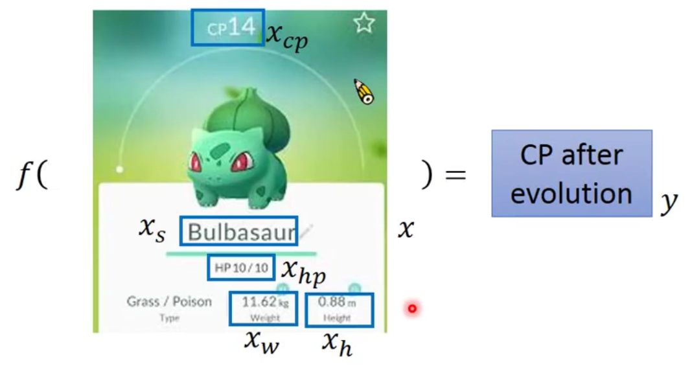
其中 x = or( x_cp, x_s, x_hp, x_w, x_h ) 而预测 y_cp（下文仅设参 xcp）
- Recap 做ML的三个步骤：
| Step 1. | 找一个model |
| Step 2. | 定义function set 里 evaluate它的好坏 |
| Step 3. | 找出最好的function |
Step 1: Model
找function set 就是所谓的model #存疑
Model → a set of function: f1, f2, ...
- 这其中： f(x) = y = b + w xcp (w 和 b 可为*任意值)
就可以代入不同w及b，有无限组f(x)。但同时有些显然不合理的function，将会被之后的训练集中筛除。
由于其线性关系，也称为：
Linear model → y = b + Σw_i*x_i
b: bias 偏差w_i: weight 权重x_i: input x
Step 2: Goodness of Function
evaluate function的好坏 ： 1. 收集training data→2. 找出function
- Training data: 10 pokemons (source)

| input xcp | output ycp |
|---|---|
| x1 | y^1 |
| x2 | y^2 |
| x3 | y^3 |
| … | … |
| x10 | y^10 |
- Loss function L:
- 这里input是一个function，output是其估测误差
L(f)input为函数
= L (w, b)即input为w和b
= Σ10n=1 (y^n - f(xncp) )2转化为y^真实值与线性关系预测值偏差的平方，平方为消除符号影响
= Σ10n=1 (y^n - ( b+w*xncp ))2展开
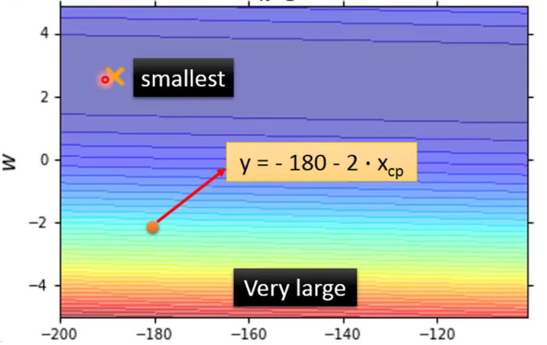
- 图中每个点代表了一组(b,w) 即为一个function
- 颜色越红代表L数值越大，即误差越大，表现越差
Step 3: Best function → Gradient Descent
A set of function →Goodness of function f←GRADIENT DESCENT 梯度递减
- 如何找一个好的function f → 评估以下的 f＊
f＊= arg minf L(f)
w＊, b＊= arg minf L(w, b)
即：取 L(f) 最小时的 f 值 （ arg: argument） 这里可用线代直接解，但是复杂函数需要微分解，并求出微分最小（即微分接近0）*
| Step | Gradient Descent |
|---|---|
| 01 | 随机选择初始w0, b0 |
| 02 | 计算w对L偏微分, b对L的偏微分 |
| 03 | 负值(斜率下降) → 往右 / 正值(斜率上升) → 往左 |
| * | step size取决于 a.微分大小 b. η “learning rate” （大时更新幅度大、学习效率快） |
| 04 | 多次迭代后：找出local optimal NOT global optimal (但在linear regression不是问题，下方解释) |
pros：
无需穷举所有w对Loss function L(w)做微分
插播解释 local optimal 和 global optimal：
梯度下降（gradient descent）图形上的表达
- 把偏微分排成一个向量（在本例中是向量）
- 偏微分的梯度下降 即为 等高线的法线方向 → 所以它会逐渐往紫色方向走
| Linear | Non-linear |
|---|---|
 |
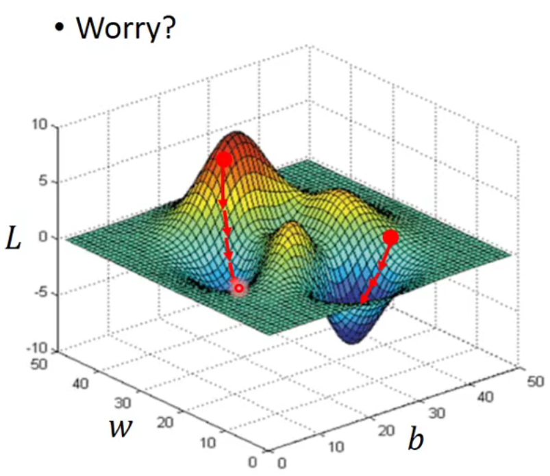 |
| 线性回归的损失函数为convex，即 无 local optimal | 但 若非线性回归：即有 local optimal，又有 global optimal 的位置 |
回到Pokemon CP预测：
此时要用新的testing data测试其error → 泛化（generalization）
最终的线性关系式为 ，其误差为31.9；但 输入另外一组10个Pokemon数值作为testing data，误差为 35。即 预测不准确。
复杂模型（提升准确性）：
OPTION 1: 选择其他model：
| Model | Training data | Testing data |
|---|---|---|
| y = b + w1· xcp+w2·(xcp)2 | 15.4 | 18.4 |
| y = b + w1· xcp+w2·(xcp)2+w3·(xcp)3 | 15.3 | 18.1 |
| y = b + w1· xcp+w2·(xcp)2+w3·(xcp)3+w4·(xcp)4 | 14.9 | 28.8 |
| y = b + w1· xcp+w2·(xcp)2+w3·(xcp)3+w4·(xcp)4+w5·(xcp)5 | 12.8 | 232.1 |
Model维度的提升会增加 training data的准确度，但！ 复杂model导致了testing data很糟糕。
即：OVERFITTING 过拟合 → 选择最合适的model，此例为维度3的。
OPTION 2: 种类划分做不同的regression方程
(前提数据集够多)
| species 1 | species 2 | species 3 and more | |
|---|---|---|---|
| y = | b1 + w1 · δ(xs = s1) · xcp | +b2 + w2 · δ(xs = s2) · xcp | +b3 + w3 · δ(xs = s3) · xcp +… |
其中的 δ() 为Boolean(true = 1, false = 0)的filter，所以实际上整个公式为linear model。
- 尽管训练集和测试集最后的结果差别有点大，但从测试集的error而言比之前的结果都要好。
OPTION 3: 多参数考虑
Back to step 1: 除了CP，还可考虑 hp、weight等参数。
结果是训练误差1.9而测试误差为102.3，即overfitting。Back to step 2: Regularization 正则化
| 原方程 | 新增项 |
|---|---|
| L= Σn (y^n - ( b+Σwixi))2 | +λ·Σ(wi)2 |
- 其中
λ是常数，需要手调；而 新增项 越小越好。
只有w而没有b，因为w影响了平滑程度，而b和平滑程度无关。
但 为什么期待加上这个项越小越好呢？
- 更平滑：使得 → input有变化时，而output不敏感
- 杂讯 noise corrupt input时，smooth function has less influence.
同时，不一定是 λ 更大时会更好；那应该考虑多大的 λ ？
- 转折点使得testing data error最小
- P4的练习用了AdaGrad

P4 Regression 回归
by Hung-yi Lee - Machine Learning 2017 - P4 Regression - Jupyter notebook
η learning rate (lr) 的 update 接近最佳解
- 提高10倍 → 相对接近，但有反复
- 提高100倍 → 反复更多
客制化lr → lr for b, lr for w
用的AdaGrad的方法：
lr_b = lr_b + b_grad**2lr_w = lr_w + w_grad**2# Update parametersb = b - lr/np.squrt(lr_b) * b_gradw = w - lr/np.squrt(lr_w) * w_grad
参考：
- databricks _ AdaGrad%20is,incorporating%20knowledge%20of%20past%20observations.)
Adaptive Subgradient Methods for Online Learning and Stochastic Optimization
- - - - - - - - - - - - - - - T A S K 0 3 - - - - - - - - - - - - - - -
[ B A C K ]

P5 误差从哪里来
by Hung-yi Lee - Machine Learning 2017 - P5 误差从哪里来
Q：Where does the erro come from？
A：来自于 1. bias 2. variance
如果你能诊断你error的来源，那你就有适当的办法improve你的model
Estimator
下文将会提及：
| 真实函数 | 预估函数 | 平均函数 |
|---|---|---|
| f^ (f head) | f (f star) | E[f*] = f- (f bar) |
将以 打靶 为例子进行展开：
- 真实函数 f^ 为 靶心
- 估测函数 f 为 *尝试打靶击中的位置
- 其之间的差距 = Bias + Variance
1. 理论统计学例子：
预测未知数x的均值
- 假设1 其均值为 μ
- 假设2 其方差为 σ2
- 假设3 N 个sample点 { x1, x2, x3,…,xN }
- Estimator of 均值 μ ： unbiased estimator
m = 1/N Σ xn *≠ μ
Var[m] = σ2/N，方差取决于sample数量N，N大时 m的方差小
虽然 m ≠ μ，但 E[m] 会正好等于μ
| 均值 m | N 数少 | N 数大 |
|---|---|---|
| 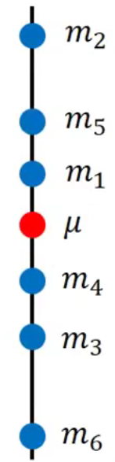 |  |
 |
Estimator of 方差 σ2
m = 1/N Σ xn，再计算 s2=1/NΣ(xn-m)2 ≠ σ2Biased estimator:
E[s2] = (N-1) / N * σ2，既考虑了m又考虑了σ
2. 到底 bias 和 variance 是什么？
| 以下表靶图逻辑 | |
|---|---|
| Bias | 靶心(f^) 和 预估预测函数的平均函数(f_) 的距离 |
| Variance | 预估预测函数(f＊) 和 平均函数(f_) 的离散程度 |
| Diagram |  |
example 1 prerequisite
- 训练集设置：
- VARIANCE: 每组训练集为10个，一共有100组，分别做regression：
- BIAS: 每组训练集为100个，一共有5000个regression model：
- Colored curves：
- Red:
f * - Blue: avg(
f *)=f_ - Black: (assumed) true
f^
- Red:
| Model | VARIANCE | BIAS | |
|---|---|---|---|
| 简单model：一次幂 y = b + wxcp |
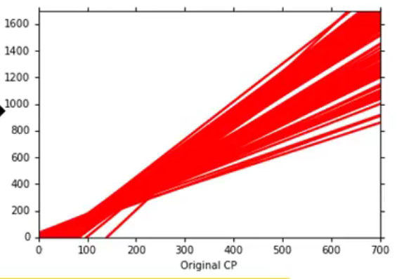 | 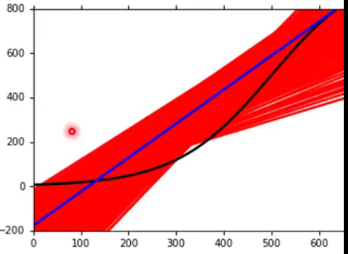 | |
| 三次幂 y = b + w1xcp+w2(xcp)2+w3(xcp)3 |
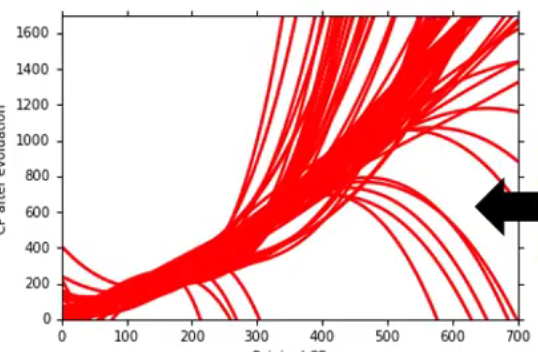 | 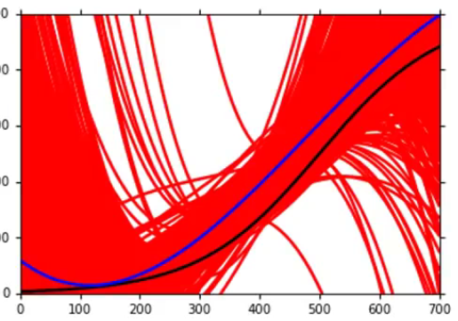 | |
| 复杂model：五次幂 y = b + w1xcp+w2(xcp)2+w3(xcp)3+w3(xcp)4+w5(xcp)5 |
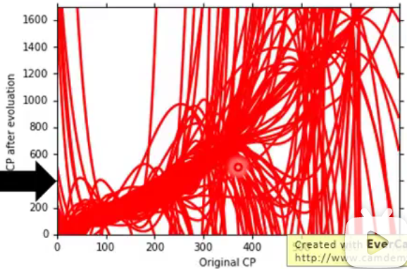 | 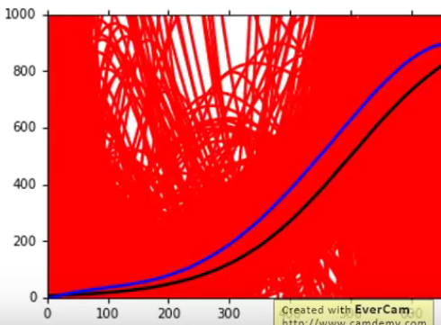 |
总结
| 简单model | 复杂model | |
|---|---|---|
| Variance | Var较小，表现为收敛 | Var较大，表现为发散 |
| Solution | 1. 增加data （很有效控制var的方法，但collect data很难） 2. 正则化regularization （+λ·Σ(wi)2 曲线越平滑越好，但可能会伤害bias） |
|
| Bias | Bias较大，表现为离真实f^越远 简单model范围小可能根本没有包含target |
Bias较小，表现为离真实f^越近 简单model范围大包含target |
| Solution | Redesign the model: 1. 更多参数 2. 更多幂次 |
那么，在回顾之前一课中error在第三次幂中会突然转变error，需要对error进行分类：
- 红线是bias变化，绿线是var变化
从左到右分别是
Underfitting: 大bias+小vars到Overfitting: 小bias+大vars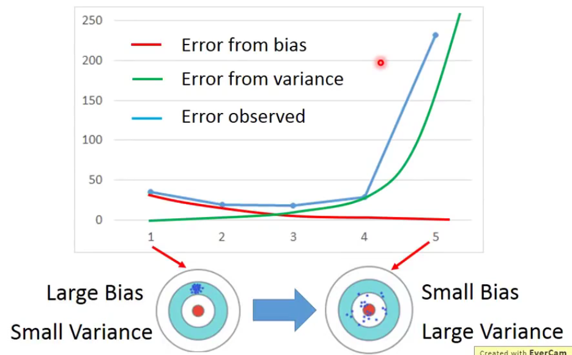
所以在做完machine learning的时候，都要问自己：到底是bias大还是var大？
- 当model无法吻合training data → bias大 即underfitting
- 当model吻合training data，却在testing data有很大error → var大 即overfitting
3. Training data 和 Testing data 如何分配
- 基本事实
training set→public testing set→private testing set
training set较好的（error越小的）model在public set上可能较好表现后，在private set的表现较差。
法1：Cross Validation 交叉校准
- 把training set分成两部分：
TRAINING SET=Training set A+Validation set B - 在
Training set A上train完之后用Validation set B去选择model - 但原本的training data会因此减少，所以在步骤2中最终选择完了model后，再用全部的
TRAINING SET在选择好的model基础上再train一次data - 此时的public testing set和private testing set的结果可以相近
不推荐！ 把public testing set回头把training set的再校准一次，这样做会把testing set的bias又带到原来的model去。又会把public set校准表现得比private set好。
- 把training set分成两部分：
法2：N-fold Cross Validation N折交叉校准
把TRAINING SET分成 N 组，例子如下：
分三份，一份validation，两份training，分别组合：
TRAINING SET
1 TR1 TR2 VAL → model 1, 2, 3,… ↓
2 TR1 VAL TR2 → model 1, 2, 3,… ↓
3 VAL TR1 TR2 → model 1, 2, 3,… ↓
→ 相同model的avg error → minimum
P6 梯度下降 Gradient Descent
by Hung-yi Lee - Machine Learning 2017 - P6 梯度下降
Recap from P3
Gradient Descent: θ* = arg minθ L(θ)
L for Loss function, θ for parameters (一组参数，n ≥1)
假设：θ 有两个变量 {θ1, θ2}
且有：
a. Gradient function ∇ L(θ) = [ 𝜕L(θ1)/𝜕θ1, 𝜕L(θ2)/𝜕θ2 ]T ，其表达为一个vector
b. learning rate η
则 Gradient Descent 可表达为：
θ1 = θ0 - η ∇ L(θ0)
θ2 = θ1 - η ∇ L(θ1)
…until find the minimum
θi = θi-1 - η ∇ L(θi-1)*
Q: 如何提高training速度？
TIP 1: Learning Rate:
用 Update amount - Loss 制图，做LR的可视化，理解LR是怎么调参的。
如果在做gradient descent的时候应该把这个图画出来，去理解前几次update的时候到底learning rate是怎么调出来；要确定它是稳定的下降
| 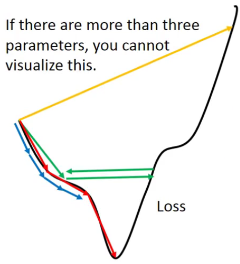 |  |
|---|---|
| 实际曲线找梯度 | visualization |
Adaptive Learning Rates
基本原则：learning rate随着参数的update，会越来越小
- 在刚开始起始点的时候，离最低点是最远，所以一开始的步伐会很大
- 经过好几次参数的update之后，比较靠近目标了，就应该调小LR
- e.g: 1/t decay: ηt = η/(t+1)1/2
Adagrad是其中最basic的小技巧的adaptive 方式
- Concept：每个参数的LR除以之前微分值的root mean square
- 具体做法：
| prerequisite | 偏微分 gt =𝜕 L(θt)/𝜕w 前所有偏微分参数的均方根 σt= [1/(t+1))Σ(gi)]2)1/2 （对每个参数都是独立不一致的） |
| Vanilla Gradient Descent Adagrad |
wt+1 = wt - ηtgt wt+1 = wt - ηt /σt gt |
而1/t decay: ηt = η/(t+1)1/2， 所以式中 1/(t+1)1/2 相消： 简化成
- wt+1 = wt - ηt /σt gt
= wt - η /(Σ(gi)2) 1/2 gt
来自李老师的灵魂拷问：
怎么解释：gradient越大，gt 项，step越大；同时 1/(Σ(gi)2) 1/2 项，step越小？
- 解释a：反差
- 解释b：找微分最小值 = 梯度下降的目的 = 微分高时，step长；微分低时，step短
以简单二元函数 y = ax2 + bx + c为例：
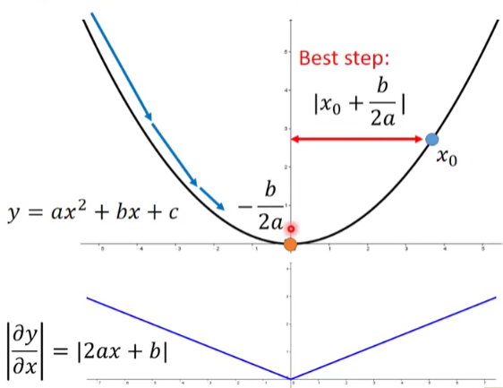
1. 梯度最低位置，一次微分为零，即：|𝜕 y/𝜕 x| = |2ax+b| = 0, x = -b/2a
2. 若从x0到梯度最低的就是距离就是：|x0 - (-b/2a)| = |x0 +b/2a| = |2ax0+b|/2a
3. 同时： |2ax0+b|/2a = |𝜕 y/𝜕 x|x=x0 / |𝜕’’ y/𝜕’’ x| = 一次微分在x0的解/二次微分（当只有一组函数时可只看一次微分部分）
4. 和 Adagrad 的关系：gt/(Σ(gi)2) 1/2 相当于 一次微分/二次微分。
4.1 root mean square的方法表达了该一次微分的开合程度，在这里可近似于二次微分的作用。
4.2 当训练集过大等原因，算一次微分可能就花费了一天，再二次微分会花费相对的时间，此时利用root mean square可直接计算一次微分结果并近似类比：|𝜕’’ y/𝜕’’ x|≈(Σ(gi)2) 1/2
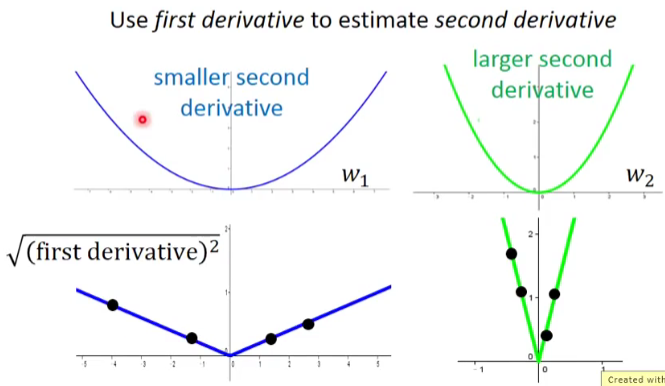
TIP 2: STOCHASTIC GRADIENT DESCENT 随机梯度下降
| 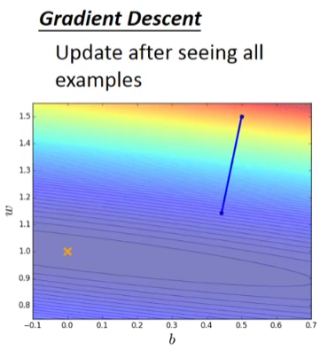 | 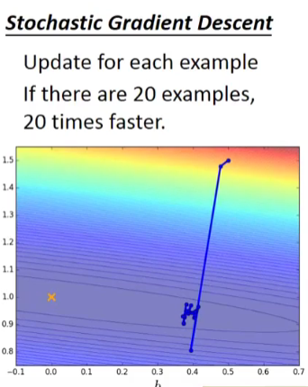 |
|---|---|
| 看完所有参数后再开始计算 | 随机选择参数后，直接计算 |
TIP 3: FEATURE SCALING 特征缩放
example: 把x1和x2放在相同scale上
- 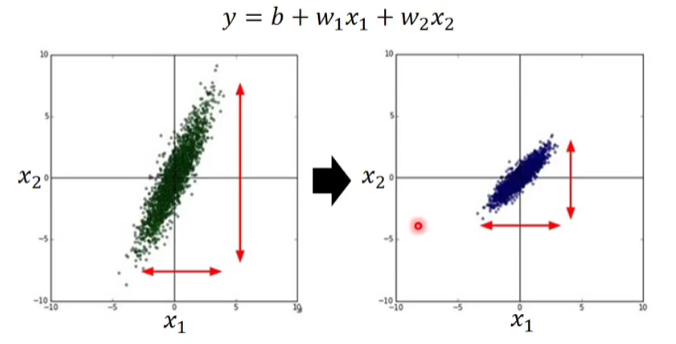
使得此例中w1和w2更近似圆形，让求微分更快（直接向圆心走）
实现Feature Scaling的方法有很多
Theory
泰勒展开式，只考虑原式+一次微分（approximation ）
h(x) = h(x0) +h’(x0)(x-x0)+h’’(x0)/2!…
原因：
1. 这种大约接近已经够用
2. 二次微分在deep learning会增加时间，不划算
一句话总结：通过各项偏导组成vector，并点乘求最小值即180°平行时；其中learning rate正比于选点圆型半径，并赋负号形成180°；且画圆时半径越小越精确。
P7 梯度下降 Gradient Descent - AOE演示
by Hung-yi Lee - Machine Learning 2017 - P7 梯度下降 AOE
P8 梯度下降 Gradient Descent - Minecraft演示
by Hung-yi Lee - Machine Learning 2017 - P8 梯度下降 AOE
- - - - - - - - - - - - - - - T A S K 0 4 - - - - - - - - - - - - - - -
[ B A C K ]

P13 Deep Learning
by Hung-yi Lee - Machine Learning 2017 - P13 深度学习
THREE STEPS FOR DEEP LEARNING
| Step 1 | Step 2 | Step 3 |
|---|---|---|
| Define a function set | Goodness of function | Pick the best function |
Step 1 : Define function
- 这个function也就是神经网络Neural Network。
1.1 Neural Network 是什么？
由不同的logistic regression连接（concatenate）在一起，把其中一个logistic regression称之为神经元Neuron。
1.2 神经元 Neuron 中：
- Network structures: 不同的连接。不同于regression不需考虑structure，神经网络中的structure(有多少层layer，每层layer有多少neuron等)很重要
- Network parameter θ: 大堆logistic regression的weight和bias集合起来
1.3 neuron间怎么连接？
- 最常见的称作：Fully Connect Feedforward Network
- 把神经元排成一排一排
- 每个neuron都有一组weight和bias，通过training data找出来
- 整个process：
input→matrix运算(diff. weight & bias) →logistic regression(sigmoid function)→ 重复于不同layer →output
input是一个vector，output也会是一个vector
给定的结构 = define a function set
1.4 Fully Connect Feedforward Network
- layer和layer之间两两相连，所以称之为fully connect
- 从layer1传到layer2，由后往前传（此处 后指layer数字更小，即远离output端为后，靠近output端为前）
Input Layer→Hidden Layers→Output Layer
那Deep Learning中的 Deep = ManyHidden Layers。
1.5 Network的运作：Martix Operation


- blue:
input= vector - yellow:
weight= matrix - green:
bias= vector - blue:
output= logistic regression, 可以是sigmoid, 但现在并不常用
1.6 Output layer
- Output Layer之前的部分看作是特征值提取器（feature extractor），代替特征工程（feature engineering）
- Output Layer为多级分离器（multi-class classifier）
相当于前面Hidden Layers中抽出一组特别好的feature，并用multi-class classifier分类好，用softmax function。
1.7 Structure
- 多少层？多少神经元？
多尝试+直觉（经验） - 结构自动生成：Evolutionary Artificial Neural Networks
- 自己设计结构：CNN Convolutional Neural Network
Step 2 : Goodness of function
output为y，target为y^，目标就是y,y^ 越小越好。
Total Loss: L = Σ Cn(θ) 即所有loss的总损失最少。
→ gradient descent → network parameter θ调整
- Backpropagation：反向传播有效计算w对L的微分
有以下toolkit：
Step 3 : Pick the best function
P14 Backpropagation
by Hung-yi Lee - Machine Learning 2017 - P14 反向传播
Chain Rule
通过微分或偏微分的分裂，把初始函数和目标函数对应。
- Case 1. 串联： y = g(x), z = h(y)
Δx → Δy → Δz- Case 2. 串联： x = g(s), y=h(s), z = k(x,y)
Δs → Δx → Δz
Δs → Δy → Δz
- Case 2. 串联： x = g(s), y=h(s), z = k(x,y)
Loss function
求Loss function L(θ) = ΣCn(θ) 对w的偏导：
𝜕L(θ)/𝜕w = Σ 𝜕Cn(θ)/𝜕w展开后：
𝜕C/𝜕w = (𝜕z/𝜕w) * (𝜕C/𝜕z)
其中前项：𝜕z/𝜕w= x (input项)，因为z = x1w1+x2w2+…+b
也就是可以用Forward path正向计算偏微分。但是：展开式后项
𝜕C/𝜕z很难算，所以用Backward path来算。其过程相当于电路中放大器的做法。backward path的需要正向算完，得出output后，再反向算得偏导。
- - - - - - - - - - - - - - - T A S K 0 5 - - - - - - - - - - - - - - -
[ B A C K ]
P5 Local minima vs Saddle point
by Hung-yi Lee - Machine Learning 2021 - P5 局部最小与鞍点
1. Terminology of local minima & saddle point
Optimization fails ↓
 </p>
</p>
Scenarios
1. `Blue`：当到达某个时刻，参数update对loss没有变化，但loss并不小；
2. `Orange`：从刚一开始，gradient就没有变化，gradient为0
即 对Loss的微分为0，gradient descent无法update参数。 可能的原因：
1. `local minima`
2. `saddle point`（鞍点）→ 既不是local minima, 又不是local maxima
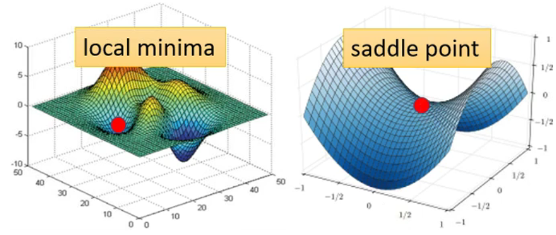
- gradient = 0的点 统称为
critical point
2. 如何判断local minima还是saddle point？
Task03中的泰勒展开式，增加二次微分项
- θ = θ’ 附近的 L(θ) 可展开为：
*L(θ) ≈ L(θ') + ( θ - θ' )T **g** + 1/2 ( θ - θ' )T **H** ( θ - θ' )*
- 一次微分 Gradient g is a vector：*gi = 𝜕 L(θ’)/ 𝜕 θi*
- 二次微分 Hessian H is a matrix：*Hij = 𝜕 2L(θ’)/ 𝜕 θi𝜕 θj*
- 和
critical point有什么关系？- 一次微分在
critical point时为零 - 二次微分则可用于判别
critical point的特性（他的地貌长什么样子）
- 一次微分在
Hessian H：simplified 1/2 ( θ - θ’ )T H ( θ - θ’ ) → vT *H v
- For all
v: vT H v >0 → θ’ 附近 L(θ) > L(θ’) → Local minima - For all
v: vT H v <0 → θ' 附近 L(θ) < L(θ') → Local maxima</u> - Sometimes vT H v >0, sometimes vT H v <0 → Saddle point </u>
- vT H v >0 相当于
His positive definite = All eigen values are positive，即直接看H的eigenvalue为正就可以判断local minima；同理eigenvalue全负时，为local maxima；有正有负时，为saddle point。
- For all
Saddle point时怎么继续做gradient descent：- 以下方法不常在实际中运行：
- 求
H的特征向量u及特征值λ → vT Hv 中v用u代替 → uT H u = uT λ u = λ ||u||2 - 若 λ < 0 时，λ ||u||2 < 0 → L(θ) < L(θ‘) 即 local maxima的情况
- 换句话说 只要沿着eigenvector u 的方向去更新参数，L 就会减小
- 但由于计算量过大，这种方法不实用。但是是一种可能性，实在碰到saddle point最差的情况下也能用这种方式。
- 求
- 以下方法不常在实际中运行：
- θ = θ’ 附近的 L(θ) 可展开为：
P6 Batch vs Momentum
by Hung-yi Lee - Machine Learning 2021 - P6 批次与动量
1. BATCH
Terminology
- batch
- Batch也有人称之为mini batch
- 实际上算微分的时候，把所有data分成一个个的batch
- 每一笔batch资料里算gradient，再update参数
- 意思是不会把所有的data同时算loss，而是按batch来
- epoch
- 把所有的batch看过一遍，称之为一个epoch
- 每一个epoch的batch都不一样
- shuffle：每次更新epoch时batch都不一样，叫做shuffle
- batch
Batch size: Small Batch v.s. Large Batch
example 1:无平行运算，batch size的不同结果
| Batch size | = N (full batch) | = 1 |
|---|---|---|
| Gradient Descent |
upddate after seeing all the examples 在一个epoch里只update一次  |
update for each example 在一个epoch 里面会update 20次  |
| Pros | 时间长 | 时间短 |
| Cons | 稳当 powerful | 较noisy |
Q1: 但如果加入平行运算呢？(by GPU)
example 2:平行计算，larger batch size会更好- Larger batch size 并不一定会需要更长的时间算gradient；但有上限。
从batch size 1到1000时，平行运算导致时间差不多；
但10000甚至60000时，运行时间就开始指数型增长。
- Smaller batch size 对于一个 epoch 要求更多时间更新
左边为 一次update，右边为 一个epoch 所用时间。
- 也就是考虑batch size时，考虑单次update时间 及 单次epoch的update时间
- Larger batch size 并不一定会需要更长的时间算gradient；但有上限。
Q2: 但是不是larger size的batch就是好的呢？
并不是！
在实际training中，同样的model、同样的network，照理说表示的accuracy结果应是一摸一样， 但：
example 3：平行计算，small size的准确度会更高
随着size增大，准确度下降（此例 与overfitting无关）
Q3: 为什么batch size会和准确度相关呢？
对比不同size时，gradient在larger size可能会被卡住；而在smaller size上会同时进行不同loss的计算，这种noisy update是有助于找到更低的loss

Summarizing batch size：
| Large | Small | |
|---|---|---|
| Speed for 1 update (no parallel) |
Slower | Faster |
| Speed for 1 update (with parallel) |
Same (with limitation) |
Same |
| Speed for 1 epoch | Faster ★ | Slower |
| Gradient | Stable | Noisy |
| Optimization | Worse | Better ★ |
| Generalization | Worse | Better ★ |
2. MOMENTUM
物理世界里面有惯性，使得球体在动量惯性继续向前动。那在gradient descent中，即是 前一步的weighted gradient减去现在的gradient。
mi = weighted sum of all the previous gradient g0, g1, g2, …
所以：
m0 = 0
m1 = λm0 - η g0 = - η g0
m2 = λm1 - η g1 = -λ η g0 - η g1
…

这样就有可能在local minima的时候，再尝试往前走并突破。
P7 Learning Rate
by Hung-yi Lee - Machine Learning 2021 - P7 自动调整learning rate
Adagrad
RMSProp
(没有论文) 和 Adagrad 中 Root Mean Square 唯一的不同是 RMSProp 没有取 MEAN值，而是考虑不同的权重调整式子中 α 值。
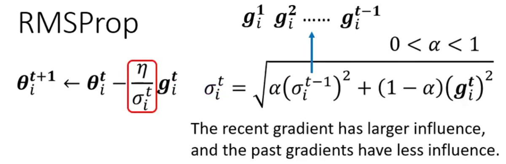
Optimization strategy a.k.a OPTIMIZER: Adam = RMSProp + Momemtum 是较为常用的 optimizer


Warm Up
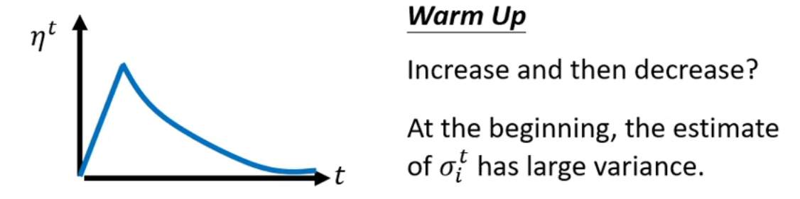
有很多高级算法都“偷偷”加上了warm up却未告知它的作用、它的来由。
A possible explaination: 统计学上讲，需要多笔数据后才能得到更精准的数据；warm up的作用便是使得数据先被“预读”过、探索过一些error surface的情报。
ref: RAdam
Summary of optimization
(Vanilla) Gradient Descent: θt+1 ← θt - η gt
Various Improvement: θt+1 ← θt - ηt/σt mt
- （考虑方向）mt = momentum: weighted sum of the previous gradients
- （考虑大小）σt = root mean square of the gradients
- （考虑schedule）ηt
P8 Optimization by loss function
by Hung-yi Lee - Machine Learning 2021 - P8 损失函数也可能有影响
下方以Classification为例：
Classification
假如分三类：Class 1, Class 2, Class 3
Class as one-hot vector

Classification operation
input x → W’ σ ( b + W · x) + b’ = output y → y' → y^
其中 y 可为任何值；y'为 y 通过softmax function转换成的值，为0到1之间；y^为 y' 目标label，通过MSE或*Cross-entropy判断
1. softmax（当 binary的时候用sigmoid）
yi‘ = exp(yi) / Σjexp(yi)
- 1 > y’ > 0
- Σy’ = 1
其过程为 1. 求指数 → 变正数 2.求总和的分数 → 算比例

2. Cross-entropy
e = - Σ yi^ ln y’i
Minimizing cross-entropy = Maximizing likelihood。Cross-entropy 比 MSE 更常用，在PyTorch里面甚至把softmax和Cross-entropy放一起了。
Q：那为什么Cross-entropy就好了呢？

MSE容易将loss卡在large loss的部分，而Cross-entropy则不会。这也说明了loss function可以改变optimization。
P9 Batch Normalization
by Hung-yi Lee - Machine Learning 2021 - P9 批次标准化
Feature Normalization
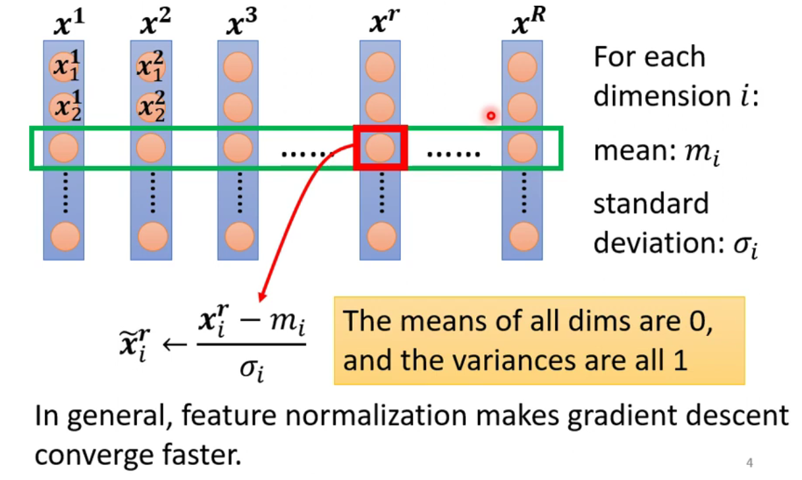
即 与均值m的差值 / 标准差σ（方差开根），注意是向量之间的话，除号表达的是element之间的运算。
做完第一个W之后得到的Z或是Z sigmoid之后的a都还需要feature normalization。但此时单独的z算出z~会导致所有z~和a都改变，如图中Δ所示：

但由于数目过大，因此只针对一个batch里面做normalization，称之为：Batch Normalization
但也有人说：
This suggests that the positive impact of BatchNorm on training might be somewhat serendipitous [adj. 偶然的].
即表达了BatchNorm是有用，但更多是因为偶然的发现。
ref: How Does Batch Normalization Help Optimization?
- - - - - - - - - - - - - - - T A S K 0 6 - - - - - - - - - - - - - - -
[ B A C K ]

P10 Convolutional Neural Network (CNN)
by Hung-yi Lee - Machine Learning 2021 - P10 CNN
Image Classification
Process：Pictrue → Model → y' ←(Cross-entropy)→ y^
1. Pictrue
- = 3D tensor (>2 dim的matrix) = 1D width + 1D length + 1D RGB channels，则可以展开为 **3张 解析度100x100 的 单色图 排成一排 成为network的输入；其中的每一个pixel可以视作某个位置某个颜色的强度**
- 假设 固定图片大小，若不一，需要rescale。（假如100x100）
2. Model
之前只讲过 Fully Connected Network，但由于影响太大会导致计算量过大，怎么办呢？
Observation 1：
neuron不需要把整张图片都看完，而是需要看出图片中的pattern
Simplification 1
- 每张图片分成不同的
Receptive field，每个神经元只关注自己的Receptive field - 怎么决定出来呢：看需求 ↓
- 可以有overlap；
- 可以不同的neuron，关注同一个
Receptive field； - 可以有大有小；
- 可以cover部分channel（不常见但有）；
- 可以不是正方形；…
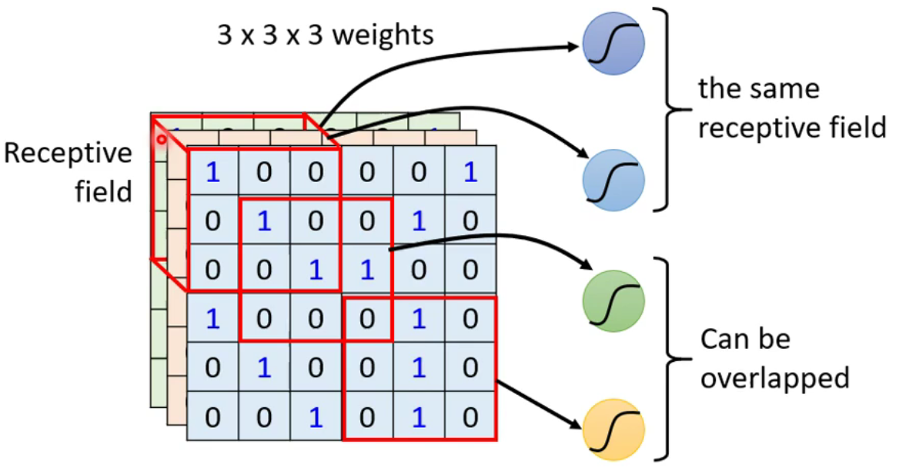
- 一般设定：
- 会看所有的channel，即RBG三色，所以一般只讲RF的高跟宽，不讲其深度
kernel size= RF的高跟宽，一般为 3x3- 每个RF会有一组neurons去“守备”它
- 各个RF之间是什么关系呢？
- 以 3x3 为 kernel size的话，以
stride= 1或2 移动 1或2格 RF，使之有overlap； - 那超出图片范围的，就用
padding来补值，一般都为0
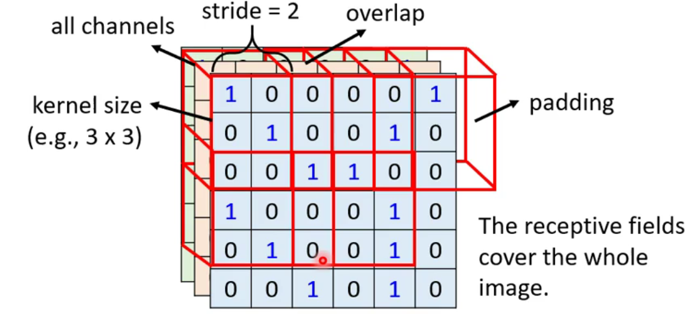
- 以 3x3 为 kernel size的话，以
Observation 2：
同样的pattern可能出现在图片的不同区域
Simplification 2
- Parameter sharing 共享参数
- shared weight
w1,w2,w3… - 但不能在同一个RF中
- 一般设定：
- 每个RF中都有一组神经元
- 每个RF中都有同样的参数，即都只有一组参数，称每组参数为
filter
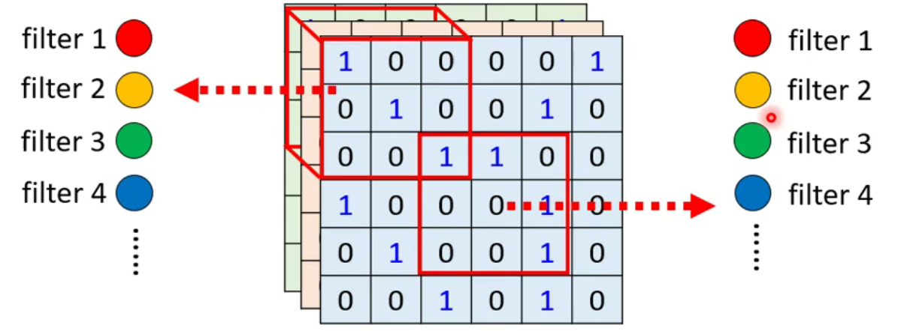
- shared weight
那至此：到底卷积层Convolutional Layer有什么用处呢？
- 范围缩小；
- bias 大：不一定是坏事；
bias 小时容易overfitting；convolutional layer特别为影像设计的，对于影像外的需要特别注意适用性
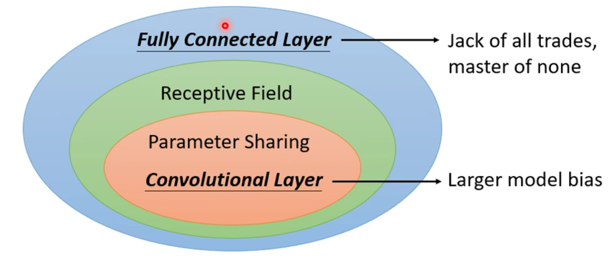
从filter的角度重新看以上的讲解：
即 利用不同的filter，以stride为1的步长，移动kernel size，并计算提取其特征，得出feature map，再继续做第二次convolution
| 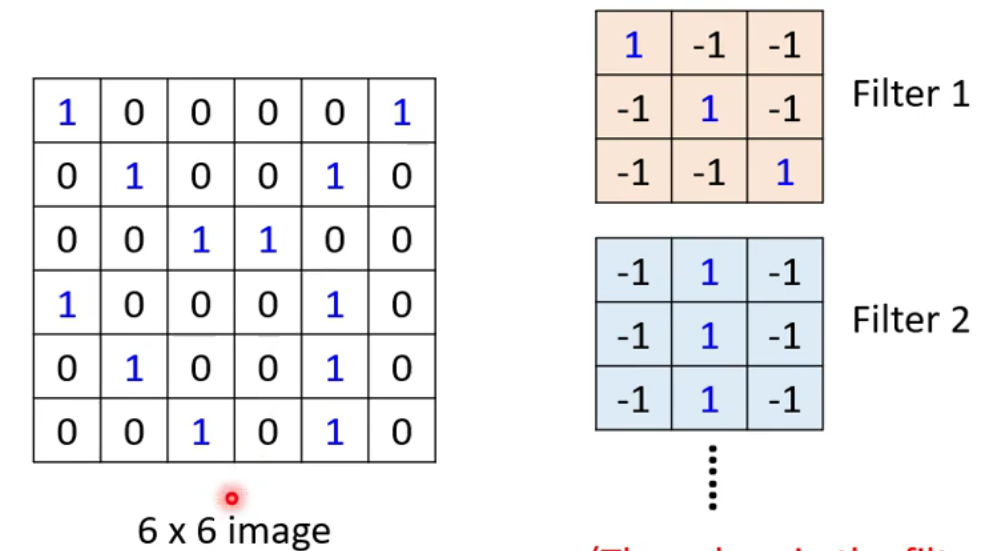 |  |
 |
|---|---|---|
| STEP1: 6X6.jpg with 64 filters | STEP2: calculate each filter(3X3) | STEP3: 2nd convolutional layer → tensor 3X3X64 |
推荐可看李永乐老师的讲解：
ref: # 人脸识别啥原理？人工智能（二）卷积神经网络
Observation 3：pooling 池化
subsampling:
把偶数的column、奇数的row都拿掉；图片变为原图1/4；且图片没有什么过分差异 → 以减少运算量
Pooling 之 Max pooling
（…延续）Convolution → Pooling → (repeat)… → Flatten → softmax → output
- 把feature map拿出来，并选择代表：最大值(此处为max pooling)
- 但 近年来pooling越来越少，因为subsample的时候会把图片压缩；且运算能力越来越强，可直接convolution
cons: CNN 无法处理scaling和rotation的问题。
所以需要做data augmentation，让CNN看过放大缩小及旋转的图片。
另外一个算法 Spatial Transformer Layer 则可以。